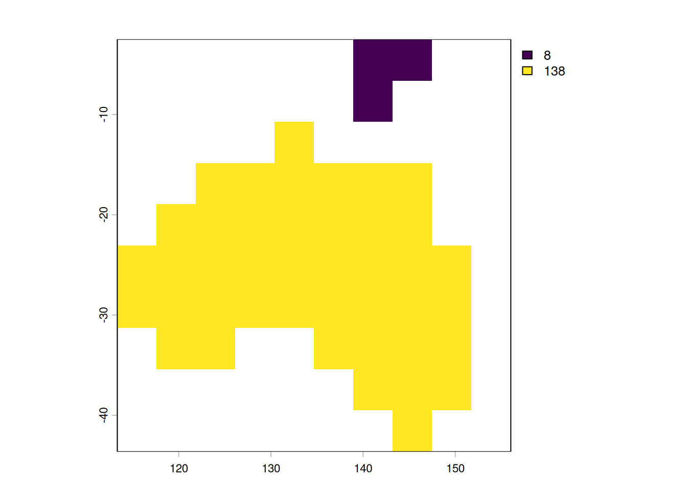
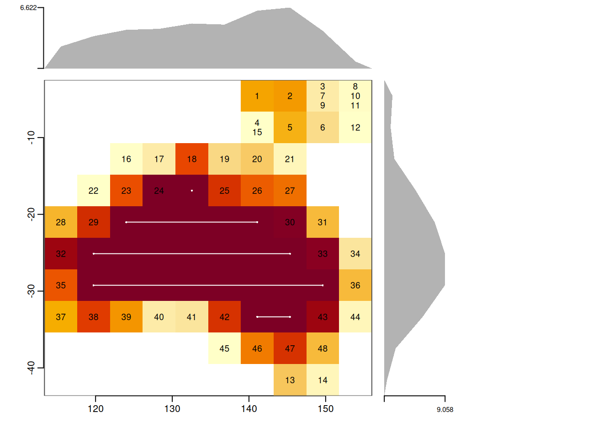
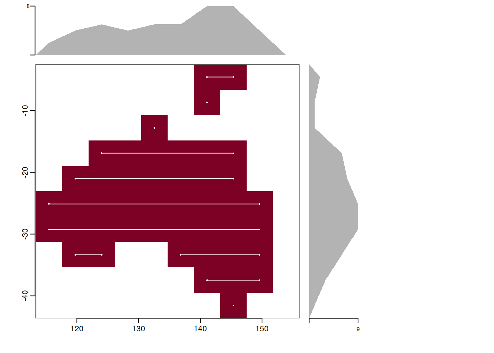
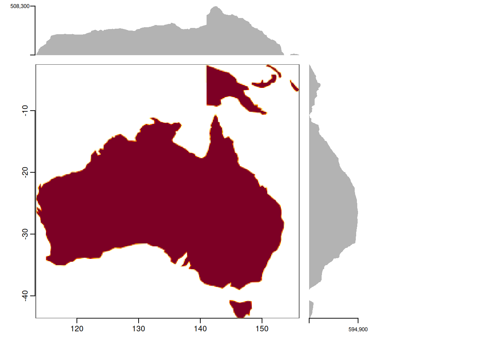

pl1 <- pl[pl$sovereignt %in%c("Australia", "Papua New Guinea"), ] (r <-rasterize(pl1, rast(pl1), field ="id"))
class : SpatRaster
size : 10, 10, 1 (nrow, ncol, nlyr)
resolution : 4.268101, 4.11346 (x, y)
extent : 113.339, 156.02, -43.6346, -2.500002 (xmin, xmax, ymin, ymax)
coord. ref. : lon/lat WGS 84 (EPSG:4326)
source(s) : memory
name : id
min value : 8
max value : 138
plot(r)

This dataset has two polygons, which are now described at the pixel level by values 8 and 138, and because we have grid in memory the values explicit, we can see our little ascii-map of two sovereign nations at very low resolution:
as.array(r)
, , 1
[,1] [,2] [,3] [,4] [,5] [,6] [,7] [,8] [,9] [,10]
[1,] NA NA NA NA NA NA 8 8 NA NA
[2,] NA NA NA NA NA NA 8 NA NA NA
[3,] NA NA NA NA 138 NA NA NA NA NA
[4,] NA NA 138 138 138 138 138 138 NA NA
[5,] NA 138 138 138 138 138 138 138 NA NA
[6,] 138 138 138 138 138 138 138 138 138 NA
[7,] 138 138 138 138 138 138 138 138 138 NA
[8,] NA 138 138 NA NA 138 138 138 138 NA
[9,] NA NA NA NA NA NA 138 138 138 NA
[10,] NA NA NA NA NA NA NA 138 NA NA
This doesn’t scale well for super massive grids, don’t try this - terra will work very hard to put the four hundred and nine billion values somewhere, and even though the file will be tiny in the end it has to materialize every pixel on the way.
Instead, we can rasterize abstractly - here with a cheap R package cbr that runs the Rust library code in controlledburn.
library(cbr)## geos gives us interchange for SpatVectorburn <-cb_burn(geos::as_geos_geometry(pl1), dimension =c(10, 10))burn
<cb_burn>
grid: 10 col x 10 row
extent: x[113.339, 156.02] y[-43.6346, -2.5]
mode: coverage
tables: runs=5, edges=48, lines=0, points=0, notes=0
plot(burn)

str(burn)
List of 5
$ runs :'data.frame': 5 obs. of 4 variables:
..$ row : int [1:5] 4 5 6 7 8
..$ col_start: int [1:5] 5 3 2 2 7
..$ col_end : int [1:5] 5 7 8 9 8
..$ id : int [1:5] 2 2 2 2 2
$ edges :'data.frame': 48 obs. of 4 variables:
..$ row : int [1:48] 1 1 1 2 2 2 1 1 1 1 ...
..$ col : int [1:48] 7 8 9 7 8 9 9 10 9 10 ...
..$ fraction: num [1:48] 0.44913 0.47887 0.00891 0.32007 0.39361 ...
..$ id : int [1:48] 1 1 1 1 1 1 1 1 1 1 ...
$ lines :'data.frame': 0 obs. of 4 variables:
..$ row : int(0)
..$ col : int(0)
..$ length: num(0)
..$ id : int(0)
$ points:'data.frame': 0 obs. of 3 variables:
..$ row: int(0)
..$ col: int(0)
..$ id : int(0)
$ notes :'data.frame': 0 obs. of 2 variables:
..$ geom_index: int(0)
..$ message : chr(0)
- attr(*, "extent")= num [1:4] 113.3 156 -43.6 -2.5
- attr(*, "dimension")= int [1:2] 10 10
- attr(*, "crs")= chr NA
- attr(*, "coverage")= logi TRUE
- attr(*, "n_geom")= int 2
- attr(*, "class")= chr "cb_burn"
Not only is the representation compact (ok, we have 53 rows describing 100 values, which is more data than the pixels … so its compact for large grids not tiny ones) we also have edges which are pixels that have one or more partial-coverings of the polygon/s. In approximate mode we don’t bother with those edges:
List of 5
$ runs :'data.frame': 11 obs. of 4 variables:
..$ row : int [1:11] 1 2 10 3 4 5 6 7 8 8 ...
..$ col_start: int [1:11] 7 7 8 5 3 2 1 1 2 6 ...
..$ col_end : int [1:11] 8 7 8 5 8 8 9 9 3 9 ...
..$ id : int [1:11] 1 1 2 2 2 2 2 2 2 2 ...
$ edges :'data.frame': 0 obs. of 4 variables:
..$ row : int(0)
..$ col : int(0)
..$ fraction: num(0)
..$ id : int(0)
$ lines :'data.frame': 0 obs. of 4 variables:
..$ row : int(0)
..$ col : int(0)
..$ length: num(0)
..$ id : int(0)
$ points:'data.frame': 0 obs. of 3 variables:
..$ row: int(0)
..$ col: int(0)
..$ id : int(0)
$ notes :'data.frame': 0 obs. of 2 variables:
..$ geom_index: int(0)
..$ message : chr(0)
- attr(*, "extent")= num [1:4] 113.3 156 -43.6 -2.5
- attr(*, "dimension")= int [1:2] 10 10
- attr(*, "crs")= chr NA
- attr(*, "coverage")= logi FALSE
- attr(*, "n_geom")= int 2
- attr(*, "class")= chr "cb_burn"
plot(burn_approx)

We only have 11 rows to describe as start,stop indexes.
This scales very nicely, and we don’t have to prepare the data with id - by default the burn will record the index-id of inputs, and we have some nice helpers like “specify dimension of the x side, figure out the y side by aspect ratio”.
<cb_burn>
grid: 640000 col x 616812 row
extent: x[113.339, 156.02] y[-43.6346, -2.5]
mode: coverage
tables: runs=1030351, edges=4188092, lines=0, points=0, notes=0
plot(burn_big,by_id =TRUE)

This object is informationally equivalent to a super massive GeoTIFF that is compressed. There’s no tiling or overviews in our form (but see cb_crop() for cutting this index into tiles).
We have also wasted an enormous number of virtual pixels on very low resolution polygons, so let’s do something more realistic.
First, thelist exists purely to host this statewide file of polygons.
See this post for materializing efficiently to a GeoTIFF (via Zarr) with the original controlledburn R/C++ package: https://www.hypertidy.org/posts/2026-09-03_controlled-burn/